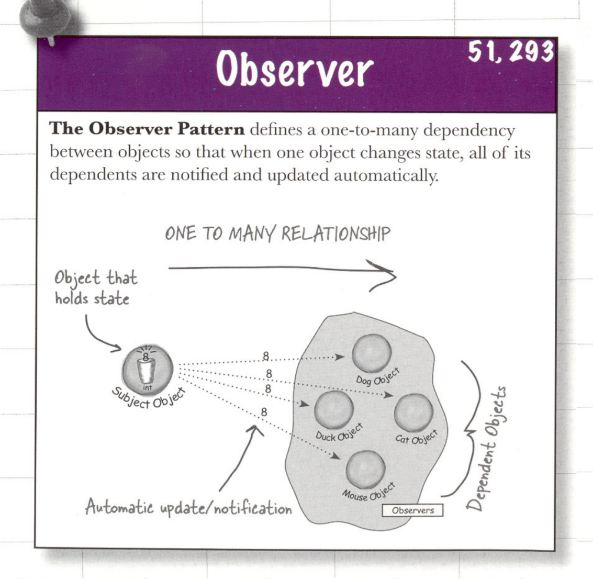

设计模式
设计原则
- 找出应用中可能需要变化之处，把它们独立出来，不要和那些不需要变化的代码混在一起。
- 针对接口编程，而不是针对实现编程。（Java 中的接口，在 C++也称为抽象类。如果类中至少有一个函数被声明为纯虚函数，则这个类就是抽象类。）
- 多用组合，少用继承。
- 为了交互对象之间的松耦合设计而努力。
- 类应该对扩展开放，对修改关闭。
- 要依赖抽象，不要依赖具体类。
- 最少知识原则：只和你的密友谈话。
- 别调用（打电话给）我们，我们会调用（打电话给）你。
- 一个类应该只有一个引起变化的原因。
设计模式
工厂方法
工厂方法模式 定义了一个创建对象的接口，但由子类决定实例化的类是哪一个。工厂方法让类把实例化推迟到子类。
抽象工厂
抽象工厂模式 提供一个接口，用于创建相关或依赖对象的家族，而不需要明确指定具体类。
适配器
适配器模式 将一个类的接口，转换成客户期望的另一个接口。适配器让原本接口不兼容的类可以合作无间。
命令
命令模式 将“请求”封装成对象，以便使用不同的请求、队列或日志来参数化其他对象。命令模式也支持可撤销的操作。
组合
组合模式 允许你将对象组合成树形结构来表现“整体/部分”层次结构。组合能让客户以一致的方式处理个别对象及对象组合。

装饰者
装饰者模式 动态地将责任附加到对象上。若要扩展功能，装饰者提供了比继承更有弹性的替代方案。
外观
外观模式 提供了一个统一的接口，用来访问子系统中的一群接口。外观定义了一个高层接口，让子系统更容易使用。
迭代器
迭代器模式 提供了一种方法顺序访问一个聚合对象中的各个元素，而又不暴露其内部的表示。
观察者
观察者模式 定义了对象之间的一对多依赖，这样一来，当一个对象改变状态时，它的所有依赖者都会收到通知并自动更新。

单件
单件模式 确保一个类只有一个实例，并提供一个全局访问点。
代理（保护）
保护代理 为另一个对象提供一个替身货占位符以访问这个对象。

代理（远程）
远程代理 就好比远程对象的本地代表。
代理（虚拟）
虚拟代理 作为创建开销大的对象的代表。虚拟代理经常直到我们真正需要一个对象的时候才创建它。当对象在创建前和创建中时，由虚拟代理来扮演对象的替身。对象创建后，代理就会将请求直接委托给对象。
策略
策略模式 定义了算法族，分别封装起来，让它们之间可以互相替换，此模式让算法的变化独立于使用算法的客户。
状态
状态模式 允许对象在内部状态改变的时候改变它的行为，对象看起来好像修改了它的类。
模板方法
模板方法模式 在一个方法中定义一个算法的骨架，而将一些步骤延迟到子类中。模板方法使得子类可以在不改变算法结构的情况下，重新定义算法中的某些步骤。
MVC
一个复合模式 模式-视图-控制器模式（MVC）把一个应用分成三个截然不同的组件：模型、视图和控制器。
简单工厂
不是一个真正的模式 但是和抽象工厂和工厂方法模式一样，它经常被用于封装创建对象的代码。